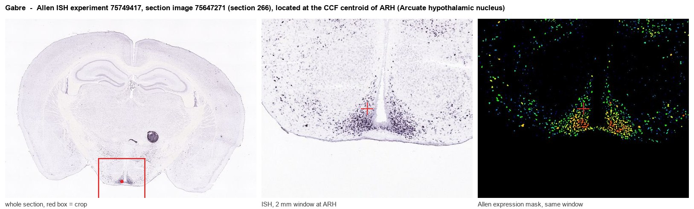
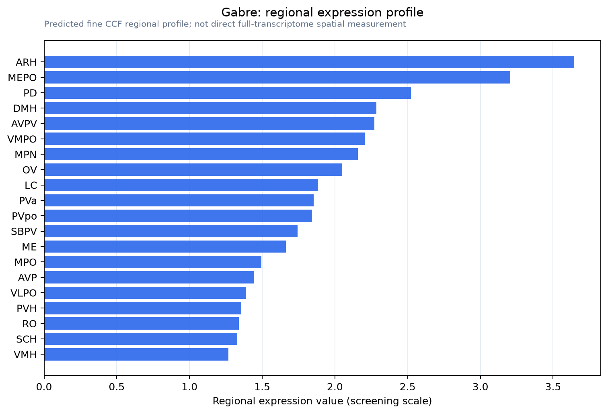

Gabre
Gamma-aminobutyric acid receptor subunit epsilon (GABA(A) receptor subunit epsilon)
Spatial tier: REGION_BIASED · Class: ION_CHANNEL · Top region: ARH (Arcuate hypothalamic nucleus) · Positive regions: 35/554
44.7Discovery Score
42.5Targetability Score
CEvidence grade C
What this means: Gabre: fine CCF profile is region-biased toward ARH (top regions: ARH, MEPO, PD, DMH, AVPV); this is a discovery lead, not direct proof.
Function in ARH: evidence, prediction, innovation
- Gene function
- Gabre encodes the epsilon subunit of the GABA-A receptor, a pentameric GABA-gated chloride channel. Epsilon-containing receptors show large agonist-independent (spontaneous) openings, fast desensitisation and resistance to potentiation by propofol and anabolic androgenic steroids. The gene lies in the X-linked Gabra3/Gabrq cluster and is restricted to certain hypothalamic and aminergic neurons.
- Region function
- The arcuate hypothalamic nucleus sits beside the median eminence and reads circulating leptin, insulin and ghrelin through a leaky barrier. Its AgRP/NPY, POMC and Kiss1 neurons set food intake, energy expenditure and neuroendocrine output.
- Published in this region
- expression only No functional study of Gabre in the ARH. Moragues et al. 2003 mapped epsilon across rat hypothalamic peptidergic populations, finding over 90% co-expression with hypocretin, oxytocin, GnRH and MCH neurons but under 10% with CART neurons, the marker that in ARH labels POMC cells; Sergeeva et al. 2005 recorded propofol-resistant IPSCs in epsilon-positive tuberomammillary and orexin neurons; Wang Z et al. 2024 made a Gabre-Cre line and showed preoptic Gabre neurons set body temperature and heart rate.
- Predicted function
- Prediction: in ARH, epsilon-containing receptors would supply a standing, ligand-independent chloride leak setting resting potential and firing threshold in a defined neuron subset, and would make those cells relatively propofol- and neurosteroid-insensitive. Chemogenetic activation of ARH Gabre neurons via the existing Gabre-Cre line should alter food intake and thermogenesis; Gabre deletion should depolarise these cells and produce hyperphagia or altered energy expenditure plus an anaesthetic-sensitivity shift.
- Innovation
- ★★★★☆ 4/5 A Gabre-Cre mouse now exists but has only been used in the preoptic area, leaving the arcuate Gabre population unexamined despite clear relevance to feeding.
- Tools
- Gabre-Cre knock-in mouse (Wang Z 2024) with standard DREADD and ChR2 AAVs; anti-GABA-A epsilon antibodies and ISH probes; propofol- and steroid-insensitive currents (Jones 2006) as an electrophysiological signature; Agrp-Flp or Pomc-Flp for intersectional targeting.
- References
Direct evidence located at the region

Allen ISH experiment 75749417, section image 75647271 (section 266): the section that contains the CCF centroid of Arcuate hypothalamic nucleus according to the Allen image-to-atlas alignment (reference_to_image), with a 2 mm window around that point. Left: whole section, red box = window. Middle: ISH signal. Right: Allen's expression-mask view of the same window. open this image in the Allen viewer
Look it up yourself: Allen Mouse Brain ISH for GabreAllen reference atlas: ARH (structure 223)ABC Atlas MERFISH viewer(in the ABC Atlas choose dataset MERFISH-C57BL6J-638850-CCF, colour cells by gene "Gabre" or by parcellation_substructure "ARH")All genes confined to ARH + 3-D brain
Direct spatial evidence
MERFISH REGION LOCATOR

Regional expression figure

Predicted WMB × fine-CCF profile; not direct full-transcriptome spatial measurement.
Spatial profile
Evidence and specificity
- Evidence status
- PREDICTED_FINE
- Direct sources
- None; predicted localization only
- Exclusive threshold
- 12 positive regions out of 554
- Spatial specificity
- 0.334
- Top-region fraction
- 0.053
- Filter status
- PASS
Interpretation limits
- Cell-type-to-region projection is imputed expression, not direct spatial measurement.
- Adult reference atlases do not establish stability across age, sex, strain, state, or disease.
- Transcript abundance does not guarantee protein abundance or genetic-tool performance.